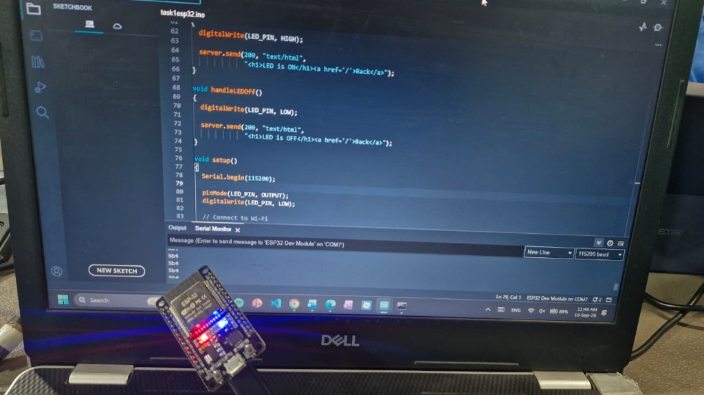

01
// THE BIG PICTURE
Core Objective & Architecture Overview
Embedded Micro-Server Paradigm
- Transforms the ESP32 into a self-contained local web server hosting responsive HTML directly from program flash.
- Zero external dependency on internet, AWS, or third-party cloud brokers; functions flawlessly in isolated air-gapped networks.
- Forms the core baseline for commercial edge IoT devices (e.g., smart plugs, localized device gateways, and industrial HMIs).
Request Routing & GPIO Dispatch
- Endpoint
GET /: Returns main control console with large styled touch-friendly ON and OFF buttons. - Endpoint
GET /on: ExecutesdigitalWrite(LED_PIN, HIGH), illuminates the onboard blue LED, and returns confirmation with Back link. - Endpoint
GET /off: ExecutesdigitalWrite(LED_PIN, LOW), de-energizes the blue LED, and renders state feedback.
Visual End-to-End Data Pipeline
Real-Time Dataflow
Client Browser
192.168.56.202
Wi-Fi: protosem
→
HTTP Port 80
ESP32 WebServer
server.handleClient()
Route Dispatch
→
/on or /off
Onboard Blue LED
GPIO 2 (HIGH/LOW)
02
// LAB VERIFICATION PROOF
Physical Hardware Lab Testing & Visual Evidence
 ● GPIO 2 : HIGH (ON)
● GPIO 2 : HIGH (ON)
Active State: /on Route Verification
Laptop browser visits 192.168.56.202/on. The ESP32 executes handleLEDOn(), driving GPIO 2 HIGH. The bright onboard blue SMD LED illuminates brilliantly while the screen renders "LED is ON" with a return link.
 ○ GPIO 2 : LOW (OFF)
○ GPIO 2 : LOW (OFF)
Inactive State: /off Route Verification
Accessing 192.168.56.202/off triggers handleLEDOff(), driving GPIO 2 LOW. The blue indicator LED immediately shuts down while the red power rail LED remains active.

⚙ COM7 @ 115200 BaudFirmware Flashing & Serial Telemetry
Arduino IDE uploading task1esp32.ino to ESP32 Dev Module via COM7. Serial monitor tracks connection handshake to SSID protosem and confirms the assigned IP 192.168.56.202.
03
// TEST THE LIVE ENDPOINTS
Interactive Embedded Server Sandbox
ESP32 DevKit
PWR (3.3V)
GPIO 2 (LOW / OFF)
[BOOT] ESP32 Dev Module Initialized
[WIFI] Connecting to WiFi: protosem .....
[WIFI] WiFi connected!
[NET] ESP32 IP address: 192.168.56.202
[HTTP] Web server started on Port 80!
[PIN] pinMode(2, OUTPUT) | Initial State: LOW (0.0V)
[READY] Awaiting client HTTP GET requests...
04
// VECTOR HARDWARE SCHEMATIC
Precision Circuit Schematic & Hardware Blueprint
GPIO 2 / D2: 3.3V Logic Control Output
GND: Common Ground Reference (0V)
VIN / Micro-USB: 5V DC Power Bus
Onboard SMD LED: Built-in to ESP32 PCB
ESP32 DevKit V1
Dual-Core 240MHz SoC
- Integrated 2.4GHz 802.11 b/g/n Wi-Fi transceiver
- Dual 32-bit Xtensa LX6 microprocessors
- Built-in blue indicator SMD LED tied directly to GPIO 2
Target Output Pin
GPIO 2 (Digital Pin D2)
- Operating logic level: 3.30V (HIGH) / 0.00V (LOW)
- Maximum source current: 12mA per GPIO
- Supports boot strapping (pulled low during flash upload)
Discrete 220Ω Resistor
Optional External Protection
- Current calculation: I = (3.3V - 3.0V) / 220Ω ≈ 1.4mA
- Prevents excess current draw from the ESP32 IO driver
- Tolerance: ±5% (Gold band) 1/4 Watt
| ESP32 Pin | Target Component | Wire Color | Signal / Purpose |
|---|---|---|---|
| GPIO 2 (D2) | Onboard Blue LED (Internal) OR External Anode | Purple | 3.3V Switched Digital Logic Output |
| GND | Common Ground Rail to LED Cathode | Cyan / Black | Common System Ground (0V Reference) |
| Micro-USB | Laptop / USB Charger Power Bus | Red | Regulated 5V DC Supply to Onboard AMS1117 LDO |
05
// ARDUINO C++ SOURCE: task1esp32.ino
Core Firmware Architecture
task1esp32.ino
#include <WiFi.h>
#include <WebServer.h>
const char* ssid = "protosem";
const char* password = "Proto#123";
#define LED_PIN 2
WebServer server(80);
void handleRoot()
{
String html = R"rawliteral(
<!DOCTYPE html>
<html>
<head>
<title>ESP32 LED Control</title>
<meta name="viewport" content="width=device-width, initial-scale=1">
<style>
body { font-family: Arial; text-align: center; margin-top: 80px; }
h1 { font-size: 35px; }
button { width: 150px; height: 60px; font-size: 22px; margin: 15px; cursor: pointer; }
</style>
</head>
<body>
<h1>ESP32 LED Control</h1>
<a href="/on"><button>ON</button></a>
<a href="/off"><button>OFF</button></a>
</body>
</html>
)rawliteral";
server.send(200, "text/html", html);
}
void handleLEDOn()
{
digitalWrite(LED_PIN, HIGH);
server.send(200, "text/html", "<h1>LED is ON</h1><a href='/'>Back</a>");
}
void handleLEDOff()
{
digitalWrite(LED_PIN, LOW);
server.send(200, "text/html", "<h1>LED is OFF</h1><a href='/'>Back</a>");
}
void setup()
{
Serial.begin(115200);
pinMode(LED_PIN, OUTPUT);
digitalWrite(LED_PIN, LOW);
// Connect to Wi-Fi
WiFi.begin(ssid, password);
Serial.print("Connecting to WiFi");
while (WiFi.status() != WL_CONNECTED)
{
delay(500);
Serial.print(".");
}
Serial.println();
Serial.println("WiFi connected!");
Serial.print("ESP32 IP address: ");
Serial.println(WiFi.localIP());
// Web server routes
server.on("/", handleRoot);
server.on("/on", handleLEDOn);
server.on("/off", handleLEDOff);
server.begin();
Serial.println("Web server started!");
}
void loop()
{
server.handleClient();
}
06
// PRACTICAL BENCH LOG
Debugging Insights & Engineering Takeaways
The Challenge: Mobile Browser Favicon Requests
- Modern smartphones running Chrome or Safari automatically send an immediate auxiliary request to
/favicon.icoimmediately following the main document. - In naive custom TCP stream socket parsers, any unexpected URI string can cause unintended state changes or client buffer hangs.
The Engineering Solution: Explicit Routing via WebServer
- Leveraging ESP32's native
WebServer.hlibrary with strict route registrations (server.on("/", ...),server.on("/on", ...),server.on("/off", ...)). - Unregistered auxiliary requests like
/favicon.icoare cleanly dropped with 404 without altering GPIO state or blocking the loop.